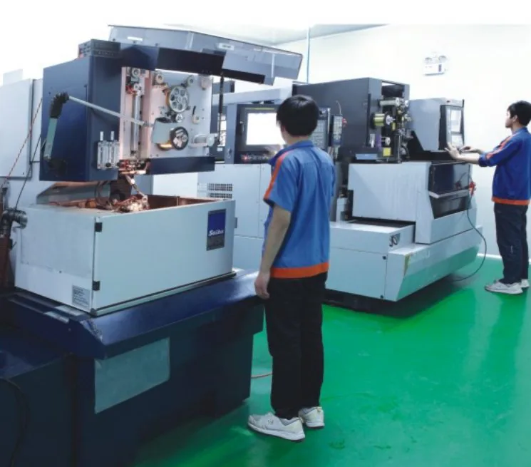

Typical Components and Applications
- mold inserts
- connector punches
- precision plates
- automation fixture parts
- thin wall contour parts
- micro profile components
Fine Wire EDM / Oil Wire EDM
Custom fine wire EDM and oil wire EDM parts for complex profiles, hardened materials, small radii and precision mold or connector tooling applications.

Typical Components and Applications
Materials
Tolerances
Equipment
Wire electrical discharge machining removes conductive material with controlled electrical discharges between a continuously moving wire electrode and the workpiece. Because the wire does not apply conventional cutting force, the process is useful for hardened tool steels, tungsten carbide, narrow slots, closed contours and profiles that would be difficult to reach with a milling cutter. Jinyi Precision reviews wire EDM parts for mold inserts, connector tooling, precision plates, punches and fixture components where the cutting path and inspection datum can be defined clearly from the drawing.
Wire EDM is not automatically the best process for every feature. Open pockets, threads and three-dimensional surfaces may require CNC machining, grinding or sinker EDM before or after wire cutting. The quotation therefore starts with feature-by-feature process planning rather than a single advertised tolerance. Material condition, workpiece thickness, start-hole access, corner radius, taper, surface requirement and the number of finishing cuts all affect feasibility, machining time and measurement strategy.
Precision mold manufacturers use wire EDM for inserts, core details, replacement tooling and plate features that must remain accurate after heat treatment. Connector and precision stamping manufacturers use it for punches, dies and small profiles where inside radii, slot width and contour relationship influence the finished stamped part. Automation and inspection-fixture projects may use wire cutting for hardened locating plates, nests and replaceable wear features when mechanical tool access is restricted.
Typical orders range from one-off development parts to repeat replacement components. For a prototype, the main objective is often to confirm geometry, datum interpretation and assembly fit. For repeat production, revision control, interchangeable dimensions and a consistent measurement method become more important. Buyers should identify whether a part is a first sample, a replacement for an existing tool, or a repeat order made to an approved drawing because each situation requires a different review.
Wire EDM requires an electrically conductive workpiece. The service is reviewed for tungsten carbide, tool steel, stainless steel, precision mold steel and hardened steel when the specified grade and condition are compatible with the required geometry. Conductivity alone does not determine the process: material thickness, heat-treatment condition, residual stress, binder composition in carbide and the required surface condition can change the cutting plan.
The RFQ should state the exact grade, supplier requirement and hardness or heat-treatment state whenever these are controlled by the customer. If alternatives are permitted, the drawing or purchase specification should define the functional requirement rather than using only a broad term such as “carbide” or “mold steel.” Material certificates, customer-supplied blanks and coating allowances should be discussed before quotation so that responsibility for material and final dimensions is clear.
Published values on this website are process references, not blanket guarantees. The equipment list records oil wire EDM references up to ±0.001 mm and water-wire projects around ±0.002 mm, with wire diameters from φ0.05 mm to φ0.20. Final capability must be confirmed against the actual material, thickness, contour length, taper, minimum radius, surface requirement, datum arrangement and measuring method. A narrow local feature may be feasible even when the same tolerance cannot be held across the complete part.
Critical contour features can be checked by optical projection or a toolmaker’s microscope, while height, pitch, hole position and related dimensions may require a height gauge, CMM or another agreed instrument. The drawing should identify basic dimensions, toleranced features and inspection datums. Where a profile is defined by CAD data, buyer and supplier should agree how the measured contour will be compared and whether edge breaks, reliefs or wire-entry areas are included in acceptance.
Jinyi’s listed wire EDM equipment includes Seibu MP250S, M50A, MM50A and M50B water-dielectric machines, totaling 8 machines, and Seibu M25LP oil-dielectric wire EDM equipment. Water-dielectric and oil-dielectric equipment are reviewed separately for each project. Machine selection is based on workpiece envelope, wire diameter, required profile, surface target and the relationship between cutting and later finishing operations.
A typical route may begin with blank preparation and datum grinding, followed by heat treatment where specified, start-hole preparation, rough cutting, finishing or skim cuts, cleaning and dimensional inspection. Some components then move to PG profile grinding for an edge or formed surface; others require surface grinding or sinker EDM for features the travelling wire cannot create. The route shown in the quotation should identify which process controls each critical feature so the buyer can compare equivalent scopes.
Send a dimensioned PDF as the controlling drawing and include DXF, DWG, STEP or STP data when available. Mark closed contours, required start holes, tapered sections, minimum internal radii, surface-finish zones and any area where a wire entry or relief is prohibited. The material grade, heat-treatment state, quantity, target delivery date and drawing revision are also required for a meaningful review.
If only selected dimensions require the tightest tolerance, identify them instead of applying one value to the complete drawing. State whether an inspection report, material certificate, protected packaging or NDA is required. Drawing files can be emailed directly, without submitting the inquiry form first. Jinyi targets a 24-hour RFQ response after complete information is available, but technical questions may be necessary before price and lead time can be confirmed.
Jinyi Precision owns and operates a Hexagon 686 coordinate measuring machine (CMM) in-house. Dimensional inspection follows the project requirements and agreed inspection plan. Inspection methods are selected for the features and acceptance criteria specified on each drawing.
Wire EDM quality control begins with drawing revision and material identification, then follows the datums and critical features agreed during quotation. Inspection method should match the feature: optical comparison for profiles, contact measurement for suitable linear dimensions, and CMM review for positional relationships where appropriate. Surface condition, edge breaks and visible damage should be included when they affect assembly or service.
Our ISO 9001:2015 certification scope is the production of precision mold accessories. Please request the current certificate if it is required for supplier approval. Buyers who require a certificate copy, a specific report format or measurements from nominated datums should request these items before order approval. This allows inspection time and documentation to be included in the process plan.
For an overseas order, the approved drawing revision, quoted process scope and inspection agreement should remain linked to the part number. Replacement inserts and tooling parts may need to fit an existing assembly, so a change in datum interpretation can be as important as a nominal dimension. Packaging should protect finished edges and prevent parts from contacting each other during transport.
Email is suitable for controlled drawing exchange and written technical confirmation, while WhatsApp can support quick clarification. Final requirements should still be recorded in the approved drawing, purchase order or written quotation. If a repeat order changes material, heat treatment, coating, quantity or revision, it should be treated as a new engineering review rather than assumed to be identical.
Consider a mold insert with a hardened blank, a closed internal contour, small radii and hole positions related to an assembly datum. The review would first confirm the controlling PDF and CAD geometry, start-hole location, available wire diameter, cutting direction, relief areas and whether datum surfaces are finished before wire cutting. The measurement plan would identify how the contour and hole positions are referenced to the same datum system.
This is a process-planning example, not a published performance result. The accepted tolerance, inspection result and assembly outcome must come from the approved drawing and project-specific record. It illustrates why a buyer should compare process route and verification method, not only a machine name or a single tolerance number.
FAQ
PDF and DXF drawings are useful for cutting profiles, while STEP or STP models help us understand part geometry and assembly requirements.
Yes. The achievable R depends on wire diameter, material, thickness and corner access. We review the drawing before confirming.
Yes. Oil wire EDM is available. We review the material, geometry and inspection requirements before confirming the machining conditions.
Common applications include precision mold components, connector tooling, automation fixtures and electronic component manufacturing tools.
Send an Inquiry
Email your drawings directly, or use the form for an initial inquiry. Please include the material, quantity, critical tolerances, surface finish and required delivery date. You do not need to submit the form before emailing us.